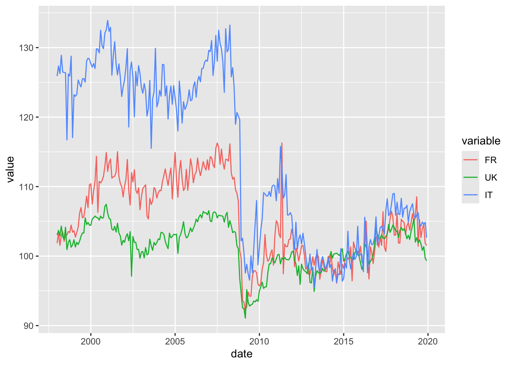
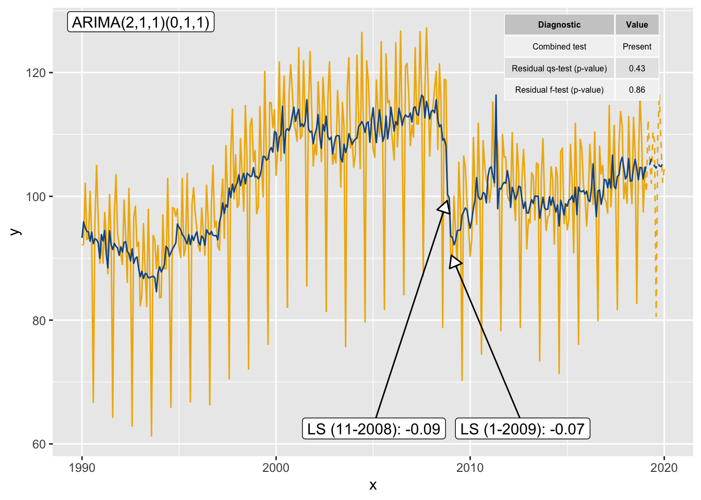
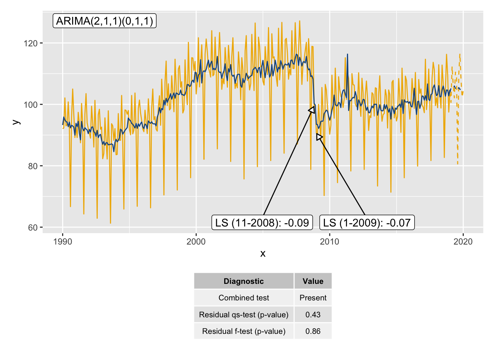
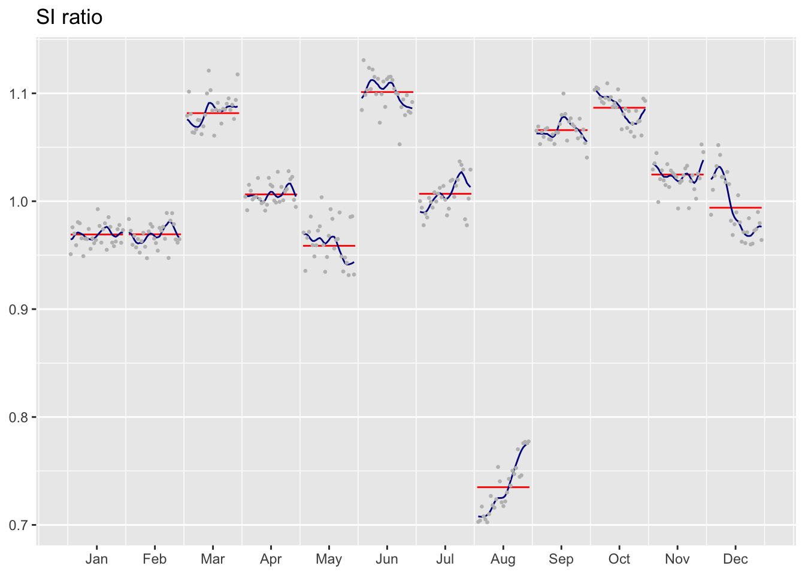
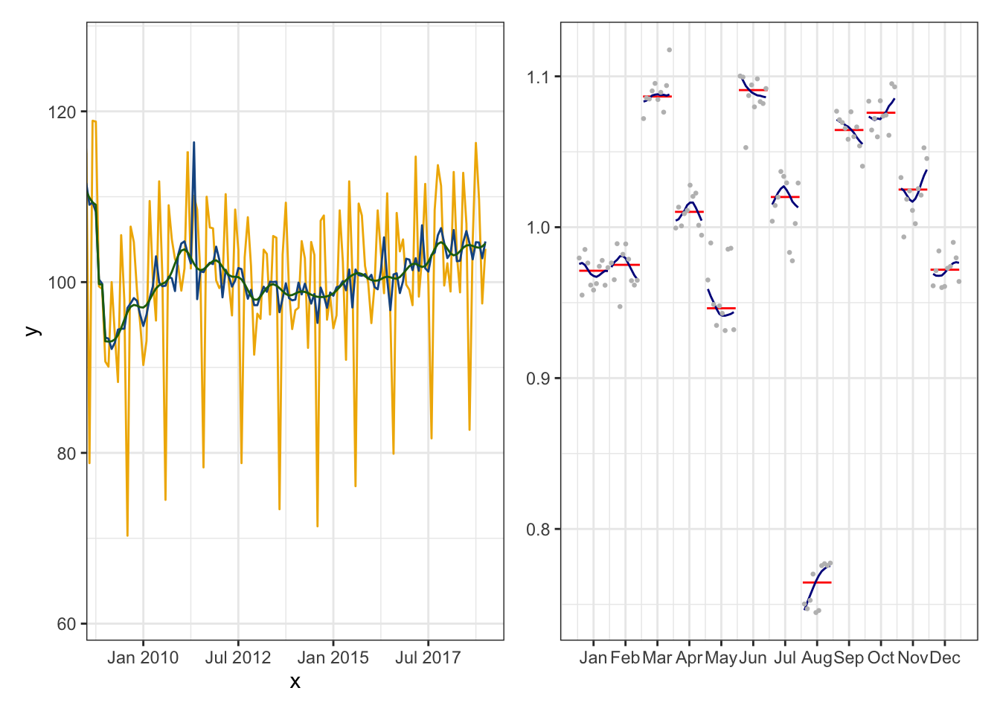
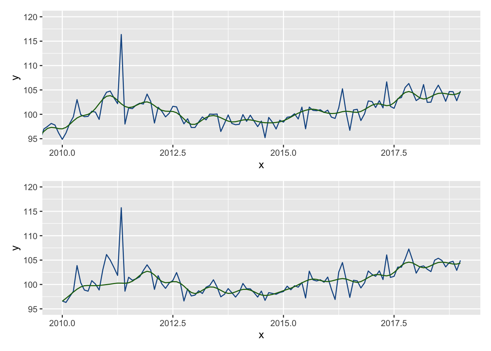
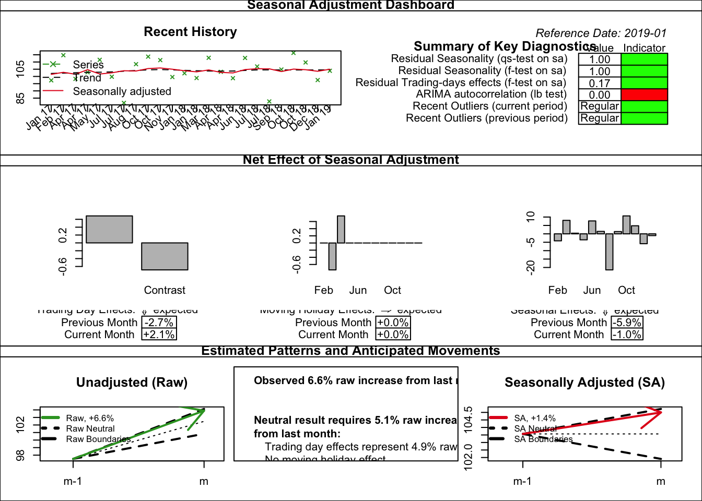
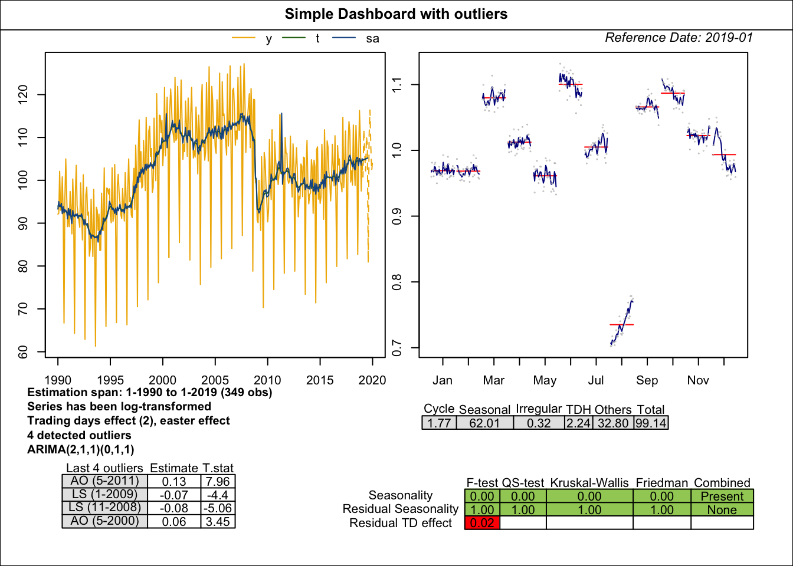

packages_to_install <- c(
"RJDemetra", "rjdqa", "ggdemetra", "rjdmarkdown", "rjwsacruncher", "rjdworkspace"
)
packages <- packages_to_install[! packages_to_install %in% installed.packages()[,"Package"]]
if (length(packages) > 0) {
install.packages(
packages,
repos = c("https://aqlt.r-universe.dev", "https://cloud.r-project.org")
)
}5 - JDemetra+ en production
Désaisonnaliser une série temporelle
L’objectif de ce TP est d’apprendre à manipuler des workspaces pour une mise en production.
Pour installer tous les packages utiles de ce TP, lancer le programme :
Lors de la mise en production, le plus simple est de manipuler des workspaces et de mettre à jour les modèles, lors de l’arrivée de nouvelles données à travers le JWSACruncher. Pour faciliter son utilisation depuis R, le package rjwsacruncher peut être utilisé.
Lorsque les workspaces sont créés depuis R, on perd toutes les métadonnées (lien vers les fichiers, commentaires, etc.), une solution pour cela : utiliser rjdworkspace pour récupérer ces données depuis un autre workspace.
Dans ce TP on utilisera les données du package RJDemetra mais n’hésitez pas à utiliser vos propres séries.
1 JWSACruncher et rjwsacruncher
1.1 Configuration du JWSACruncher
Pour éviter que le package rjwsacruncher soit trop volumineux, il ne contient pas le JWSAcruncher de JDemetra+. Voir manuel d’installation pour le téléchargement et la configuration du JWSACruncher.
Pour indiquer à rjwsacruncher où se trouve le JWSACruncher, le plus simple est de mettre à jour l’option cruncher_bin_directory :
# install.packages("rjwsacruncher") # Si pas déjà installé
library(rjwsacruncher)
# Chemin vers le dossier bin du JWSACruncher
# Remplacer "D:/jwsacruncher-2.2.4/bin" par votre propre chemin.
options(cruncher_bin_directory =
"D:/jwsacruncher-2.2.4/bin")
getOption("cruncher_bin_directory") # Pour afficher la valeur actuelle[1] "D:/jwsacruncher-2.2.4/bin"1.2 Utilisation du JWSACruncher
Pour lancer le JWSACruncher il faut trois fichiers :
- un fichier contenant les paramètres sur la méthode de rafraîchissement à utilisée pour mettre à jour le workspace (créé à partir de la fonction
create_param_file()oulist2param_file()) ;
- un workspace valide de JDemetra+ ;
- l’adresse vers le JWSACruncher (option
cruncher_bin_directory).
Dans le package rjwsacruncher, les principales fonctions associées au lancement du JWSACruncher sont :
create_param_file()oulist2param_file()qui permet de créer le fichier de paramètres ;
cruncher()qui permet de lancer le JWSACruncher sur un workspace à partir d’un fichier de paramètres ;
cruncher_and_param()qui permet de lancer le JWSACruncher tout en créant le fichier de paramètres et de personnaliser certaines sorties du JWSACruncher.
1.2.1 Création du fichier de paramètres avec create_param_file()
Les paramètres de la fonction create_param_file() sont les mêmes que ceux décrits dans le wiki du JWSACruncher de JDemetra+ (https://github.com/jdemetra/jwsacruncher/wiki). Les trois paramètres les plus importants de create_param_file() sont :
policyqui est la méthode de rafraîchissement utilisée (voir tableau ci-dessous).
| Option sous JDemetra+ | Option du cruncher | Nom court | Signification |
|---|---|---|---|
| Current[AO]: fixed model + AO for new data | current | n | Le modèle ARIMA, les outliers et les autres paramètres du modèle de régression ne sont ni ré-identifiés ni ré-estimés. Le schéma de décomposition est inchangé. Un additive outlier (AO) est ajouté à chaque nouvelle donnée. (depuis v.2.2.3) |
| Partial concurrent adjustment -> Fixed model | fixed | f | Le modèle ARIMA, les outliers et les autres paramètres du modèle de régression ne sont ni ré-identifiés ni ré-estimés. Le schéma de décomposition est inchangé. (depuis v.2.2.3) |
| Partial concurrent adjustment -> Estimate regression coefficients | fixedparameters | fp | Le modèle ARIMA, les outliers et les autres paramètres du modèle regARIMA ne sont pas ré-identifiés. Les coefficients du modèle ARIMA sont fixés et les autres paramètres du modèle de régression sont ré-estimés. Le schéma de décomposition est inchangé. |
| Partial concurrent adjustment -> Estimate regression coefficients + MA parameters of the ARIMA model | fixedarparameters | farp | Le modèle ARIMA, les outliers et les autres paramètres du modèle regARIMA ne sont pas ré-identifiés. Les coefficients AR du modèle ARIMA sont fixes, les autres coefficients sont réestimés (coefficients MA + régresseurs). Le schéma de décomposition est inchangé. (since v.3.4.0) |
| Partial concurrent adjustment -> Estimate regression coefficients + Arima parameters | parameters (by default) | p | Le modèle ARIMA, les outliers et les autres paramètres du modèle de régression ne sont pas ré-identifiés mais sont tous ré-estimés. Le schéma de décomposition est inchangé. |
| Partial concurrent adjustment -> Estimate regression coefficients + Last outliers | lastoutliers | l | Le modèle ARIMA, les outliers (sauf ceux de la dernière année) et les autres paramètres du modèle de régression ne sont pas ré-identifiés mais sont tous ré-estimés. Les outliers de la dernière année sont ré-identifiés. Le schéma de décomposition est inchangé. |
| Partial concurrent adjustment -> Estimate regression coefficients + All outliers | outliers | o | Le modèle ARIMA et les paramètres du modèle regARIMA autres que les outliers ne sont pas ré-identifiés mais ré-estimés. Tous les outliers sont ré-identifiés. Le schéma de décomposition est inchangé. |
| Partial concurrent adjustment -> Estimate regression coefficients + Arima model | stochastic | s | Ré-identification de tous les paramètres du modèle regARIMA hormis les variables calendaires. Le schéma de décomposition est inchangé. |
| Concurrent | complete (or concurrent) | c | Ré-identification de tout le modèle regARIMA. |
matrix_itemqui est une chaîne de caractères contenant les noms des paramètres à exporter. Par défaut, ce sont ceux de l’optiondefault_matrix_item. On peut donc au choix modifier l’optiondefault_matrix_itemou le paramètrematrix_item:
library(rjwsacruncher)
# Pour afficher les paramètres par défaut :
getOption("default_matrix_item")
# Pour modifier les paramètres par défaut pour n'exporter par exemple
# que les critères d'information :
options(default_matrix_item = c("likelihood.aic",
"likelihood.aicc",
"likelihood.bic",
"likelihood.bicc"))tsmatrix_seriesqui est une chaîne de caractères contenant les noms des paramètres à exporter. Par défaut, ce sont ceux de l’optiondefault_tsmatrix_series. On peut donc au choix modifier l’optiondefault_tsmatrix_seriesou le paramètretsmatrix_series:
# Pour afficher les paramètres par défaut :
getOption("default_tsmatrix_series")
# Pour modifier les paramètres par défaut pour n'exporter par exemple que
# la série désaisonnalisée et ses prévisions :
options(default_tsmatrix_series = c("sa", "sa_f"))Pour voir l’ensemble des paramètres, il suffit d’utiliser sous R la commande ?create_param_file.
Après cela, il ne reste plus qu’à créer le fichier de paramètres. Le fichier de paramètre est différent entre la version 3.0.0 de JDemetra+ et les versions antérieures. Les fonctions de création des fichiers de paramètres ont un paramètre v3 qui permet de spécifier si l’on veut que le fichier soit compatible avec la version 3.0.0. Sa valeur par défaut est getOption("is_cruncher_v3") : si l’on utilise la version 3.0.0 ou plus, le plus simple est donc de changer cette option options(is_cruncher_v3 = TRUE). Ci-dessous quelques exemples.
export_dir <- tempdir() # Remplacer ici par le dossier d'export souhaité
# Un fichier parametres.param sera créé dans le dossier export_dir
# avec la politique de rafraîchissement "lastoutliers"
# et les autres paramètres par défaut
create_param_file(dir_file_param = export_dir,
policy = "lastoutliers")
# Si l'on a modifié les options "default_matrix_item" et "default_tsmatrix_series" pour
# n'exporter que les critères d'information, la série désaisonnalisée et ses
# prévisions, la commande précédente est équivalent à :
create_param_file(
dir_file_param = export_dir,
policy = "lastoutliers",
matrix_item = c("likelihood.aic", "likelihood.aicc",
"likelihood.bic", "likelihood.bicc"),
tsmatrix_series = c("sa", "sa_f")
)Les fichiers de paramètres peuvent être lus avec read_param_file() qui renvoie une liste qui peut être modifiée et exportée avec list2param_file() :
param_f <- read_param_file(file.path(export_dir, "parameters.param"))
str(param_f)List of 7
$ config :List of 4
..$ bundle : chr "10000"
..$ csv_layout : chr "list"
..$ csv_separator: chr ";"
..$ ndecs : chr "6"
$ policy : chr "lastoutliers"
$ refreshall : logi TRUE
$ output : NULL
$ matrix_item : chr [1:4] "likelihood.aic" "likelihood.aicc" "likelihood.bic" "likelihood.bicc"
$ tsmatrix_series: chr [1:2] "sa" "sa_f"
$ paths_path : NULLLes fichiers de paramètres par défaut peuvent être obtenus avec la fonction default_param_file().
Exercice
Utiliser la fonction create_param_file() pour créé un fichier de paramètres permettant de mettre à jour un workspace :
- En réestimant le modèle ARIMA, les outliers et les autres paramètres du modèle de régression et en re-identifiant les outliers uniquement sur la dernière année.
- En exportant la statistique M7, la statistique Q-M2 et les tests de jours ouvrables résiduels ;
- En exportant la série brute, la série désaisonnalisée et la tendance (de manière verticale).
Indice
Pour voir les noms des paramètres, utiliser la fonction default_param_file() ou bien aller sur la page https://github.com/jdemetra/jwsacruncher/wiki/Output-dictionaries.
Solution
dir <- tempdir()
create_param_file(
dir_file_param = dir,
policy = "lastoutliers",
matrix_item = c(
"m-statistics.m7",
"m-statistics.q-m2",
"diagnostics.residual trading days tests.f-test on sa (td):2",
"diagnostics.residual trading days tests.f-test on i (td):2"
),
tsmatrix_series = c("y", "sa", "t"),
csv_layout = "vtable"
)Les fichiers de paramètres peuvent être lus avec read_param_file() qui renvoie une liste qui peut être modifiée et exportée avec list2param_file() :
param_f <- read_param_file(file.path(dir, "parameters.param"))
str(param_f)List of 7
$ config :List of 4
..$ bundle : chr "10000"
..$ csv_layout : chr "vtable"
..$ csv_separator: chr ";"
..$ ndecs : chr "6"
$ policy : chr "lastoutliers"
$ refreshall : logi TRUE
$ output : NULL
$ matrix_item : chr [1:4] "m-statistics.m7" "m-statistics.q-m2" "diagnostics.residual trading days tests.f-test on sa (td):2" "diagnostics.residual trading days tests.f-test on i (td):2"
$ tsmatrix_series: chr [1:3] "y" "sa" "t"
$ paths_path : NULLLes fichiers de paramètres par défaut peuvent être obtenus avec la fonction default_param_file().
1.2.2 Lancement du JWSACruncher
Pour lancer le JWSACruncher avec cruncher() ou cruncher_and_param(), il faut spécifier le chemin d’accès au dossier contenant le JWSACruncher (paramètre cruncher_bin_directory) ainsi que celui du workspace à traiter (paramètre workspace). Si cela a déjà été fait dans la section 1.1, ne pas prendre en compte le paragraphe suivant
Par défaut, le chemin d’accès au dossier du JWSACruncher est celui contenu dans le paramètre cruncher_bin_directory : il suffit donc de modifier une seule fois cette option afin qu’elle s’applique à toutes les exécutions du JWSACruncher. Le chemin à indiquer est celui du dossier contenant le fichier jwsacruncher.bat, situé dans le dossier “Bin” du dossier d’installation du JWSACruncher. Ainsi, s’il a été installé sous D:\jdemetra-cli-2.2.4, le fichier jwsacruncher.bat sera présent sous D:\jdemetra-cli-2.2.4\bin. Il faut donc modifier l’option cruncher_bin_directory de la façon suivante :
options(cruncher_bin_directory = "D:/jdemetra-cli-2.2.4/bin/")Si aucun chemin de workspace n’est renseigné, une fenêtre s’ouvre, invitant à sélectionner le workspace sur lequel on souhaite lancer le JWSACruncher.
# Remplacer ici "workspace.xml" par le chemin vers votre workspace
cruncher(
workspace = "workspace.xml",
# Remplacer ici "parameters.param" par le chemin vers votre fichier de paramètres
param_file_path = "parameters.param"
)Si vous n’avez pas de workspace vous pouvez utiliser le code suivant pour en générer un :
library(RJDemetra)
spec_x13 <- x13_spec(spec = "RSA5c")
jws <- new_workspace()
new_multiprocessing(jws, "sa1")
for (nom_series in colnames(ipi_c_eu)){
model <- jx13(ipi_c_eu[,nom_series], spec_x13)
add_sa_item(jws, "sa1", model, nom_series)
}
save_workspace(jws, "workspace.xml")Si non spécifié dans le fichier des paramètres, les résultats sont exportés dans le sous dossier "Output" du workspace (pour le workspace.xml, les résultats seront donc sous workspace/Output/). On peut aussi créer le fichier des paramètres et lancer le JWSAcruncher avec la fonction cruncher_and_param. Cette fonction permet aussi de renommer les dossiers exportées avec les noms des multi-processings utilisés dans JDemetra+ (évite d’avoir des dossiers du type SAProcessing-1)1.
cruncher_and_param(
workspace = "workspace.xml",
policy = "lastoutliers",
matrix_item = c(
"m-statistics.m7",
"m-statistics.q-m2",
"diagnostics.residual trading days tests.f-test on sa (td):2",
"diagnostics.residual trading days tests.f-test on i (td):2"
),
tsmatrix_series = c("y", "sa", "t"),
csv_layout = "vtable"
)2 Mise à jour des metadonnées avec rjdworkspace
Lorsque l’on manipule des objets depuis RJDemetra, plusieurs informations sont perdues par rapport à JDemetra+, dont :
le lien vers les données d’origine ;
les éventuels commentaires que l’on peut faire.
Toutes ces informations sont les metadata. Lorsque vous créer un workspace depuis JDemetra+, vous pouvez par exemple voir ces données en ouvrant le fichier SAProcessing/SAProcessing-1.xml associé au dossier de votre workspace. Dans l’exemple ci-dessous, dans les premières lignes de ce fichier Excel on peut voir les données utilisées, le nom de la série et dans la partie “metaData” le chemin vers le fichier Excel contenant les données :
<item name="sa1">
<subset>
<item name="ts">
<ts name="IPI BE">
<freq>12</freq>
<firstYear>2000</firstYear>
<firstPeriod>1</firstPeriod>
<data>...</data>
<metaData>
<property name="@timestamp" value="Sun Oct 08 17:19:31 CEST 2023"/>
<property name="@source" value="XCLPRVDR"/>
<property name="@id" value="demetra://tsprovider/XCLPRVDR/20111201/SERIES?file=%2FUsers%2Falainquartierlatente%2FDesktop%2Fdata.xlsx#seriesName=BE&sheetName=IPI"/>
</metaData>
</ts>
</item>
....Supposons que ce soit le workspace utilisé en production (i.e. : le workspace sur lequel vous lancez rjwsacruncher). On va se placer dans le cas où l’on souhaite modifier ce workspace depuis R. On repartira du workspace macronia_v2.xml qui est dans le .zip disponible sous /data/macronia.zip. Pour le télécharger depuis R :
dir_dl <- "."
download.file("https://AQLT.github.io/formation.2025.cvs/data/macronia.zip",
file.path(dir_dl, "macronia.zip"))
unzip(file.path(dir_dl, "macronia.zip"),
exdir = dir_dl)
Exercice
Créer un nouveau workspace macronia_tmp.xml où l’on a modifié toutes les spécifications de votre workspace en rajoutant un AO en janvier 2020.
Solution
library(RJDemetra)
# Chargement du workspace
jws <- load_workspace(file.path(dir_dl, "macronia.xml"))
compute(jws)
# Import de tous les modèles
# On a une liste qui contient autant d'éléments que de multiprocessings
# et chaque élément est une liste qui contient autant d'éléments que de modèle
# dans le multiprocessing considéré
all_models <- get_model(jws, progress_bar = FALSE)
jws2 <- new_workspace()
for(sa_name in names(all_models)){
new_multiprocessing(jws2, sa_name)
for (series_name in names(all_models[[sa_name]])){
new_spec <- x13_spec(all_models[[sa_name]][[series_name]],
usrdef.outliersEnabled = TRUE,
usrdef.outliersType = c("AO"),
usrdef.outliersDate = c("2020-01-01"))
new_jmod <- jx13(get_ts(all_models[[sa_name]][[series_name]]),
new_spec)
add_sa_item(workspace = jws2, multiprocessing = sa_name,
sa_obj = new_jmod,
name = series_name)
}
}
save_workspace(jws2, file.path(dir_dl, "macronia_tmp.xml"))Si vous ouvrez maintenant le fichier macronia_tmp/SAProcessing/SAProcessing-1.xml vous remarquez donc qu’il n’y a plus les parties metaData !
Pour les mettre à jour il existe deux fonctions dans rjdworkspace :
update_medataqui, à partir d’un workspace de référence, met à jour un workspace (macronia_tmp.xml) en faisant un matching sur le nom des séries (il y a donc potentiellement un problème si on a plusieurs séries avec le même nom)update_metadata_roughly(), à partir d’un workspace de référence, met à jour un workspace (macronia_tmp.xml) en fonction de l’ordre de la série dans le modèle (le premier modèle demacronia_tmp.xmlest mis à jour avec les informations du premier modèle de l’autre workspace, etc.).
Dans notre cas, update_metadata_roughly() suffit :
library(rjdworkspace)Warning: package 'rjdworkspace' was built under R version 4.4.1jws3 <- update_metadata_roughly(
jws, # D'abord le workspace qui contient les metadata
jws2 # Ensuite le workspace à mettre à jour
)
# Il reste à sauvegarder le nouveau workspace
save_workspace(jws3, file.path(dir_dl, "macronia_tmp2.xml"))3 Améliorer le suivi de la production
Lors de la production courante, on a généralement peu de temps pour étudier tous les modèles de désaisonnalisation. peut grandement vous aider, en faisant des graphiques automatiques, des rapports, des tableaux de bord…
Plusieurs packages peuvent vous aider à faire cela dont :
ggdemetra pour créer facilement des graphiques ggplot2 à partir des modèles de RJDemetra ;
rjdqa pour créer des tableaux de bord ;
rjdmarkdown pour un meilleur rendu avec rmarkdown des modèles de RJDemetra.
3.1 ggdemetra
ggdemetra permet de faire de la désaisonnalisation comme une couche supplémentaire de ggplot2.
geom_sa(): pour ajouter une série temporelle associée à la désaisonnalisation (tendance, série désaisonnalisée, etc.) ;geom_outlier(): pour ajouter les points atypiques corrigés dans le pre-ajustement ;geom_arima(): pour ajouter le modèle ARIMA ;geom_diagnostics(): pour ajouter un tableau avec des diagnostics.
Par exemple, pour tracer les séries désaisonnalisées d’un ensemble de séries temporelles :
library(ggdemetra)
dataGraph <- ts2df(na.omit(ipi_c_eu[,c("FR", "UK", "IT")]))
dataGraph <- reshape2::melt(dataGraph, id = "date")
ggplot(data = dataGraph, aes (x = date, y = value, color = variable)) +
geom_sa(component = "sa", frequency = 12, spec = x13_spec("RSA4c"))

ggplot2 grâce à ggdemetra.
Si vous avez déjà estimé un modèle avec RJDemetra, vous pouvez directement initialiser votre graphique grâce à la fonction init_ggplot :
mod <- x13(window(ipi_c_eu[,"FR"], end = 2019))
diagnostics <- c(`Combined test` = "diagnostics.combined.all.summary",
`Residual qs-test (p-value)` = "diagnostics.qs",
`Residual f-test (p-value)` = "diagnostics.ftest")
p_sa <- init_ggplot(mod) +
geom_line(color = "#F0B400") +
geom_sa(component = "y_f", linetype = 2,
color = "#F0B400") +
geom_sa(component = "sa", color = "#155692") +
geom_sa(component = "sa_f", color = "#155692", linetype = 2) +
geom_outlier(geom = "label_repel",
coefficients = TRUE,
ylim = c(NA, 65),
arrow = arrow(length = unit(0.03, "npc"),
type = "closed", ends = "last"),
digits = 2) +
geom_arima(geom = "label",
x_arima = -Inf, y_arima = Inf,
vjust = 1.2, hjust = -0.1)
p_sa +
geom_diagnostics(diagnostics = diagnostics,
table_theme = gridExtra::ttheme_default(base_size = 6),
ymin = 115, ymax = 130, xmin = 2010,
message = FALSE)

ggdemetra.
Pour combiner plusieurs graphiques on peut également utiliser le package patchwork :
library(patchwork)Warning: package 'patchwork' was built under R version 4.4.1p_diag <- init_ggplot(mod) +
geom_diagnostics(diagnostics = diagnostics,
table_theme = gridExtra::ttheme_default(base_size = 8),
message = FALSE) +
theme_void()
p_sa / p_diag +
plot_layout(heights = unit(c(4, 1.5), "null"))

ggdemetra avec patchwork.
La fonction ggsiratioplot() permet de tracer les SI ratios avec ggplot2 :
ggsiratioplot(mod)

ggplot2 et ggdemetra::ggsiratioplot().
Les différentes composantes du modèle (ainsi que leurs prévisions) peuvent être facilement extraites via les fonctions calendar(), calendaradj(), irregular(), trendcycle(), seasonal(), seasonaladj(), trendcycle() and raw().
Exercice
Créer une fonction graph_synthetique() qui prend en paramètre un modèle de RJDemetra et qui fait deux graphiques :
à gauche les séries brutes, désaisonnalisée et tendance sur les 10 dernières années ;
à droite les SI-Ratio.
Indice
Pour récupérer les 10 dernières années on pourra récupérer la dernière date connue avec la fonction time() et utiliser la fonction ggplot2::coord_cartesian() (à préférer à la fonction ggplot2::xlim() qui supprime des données et refait donc une désaisonnalisation sur une autre période).
Solution
graph_synthetique <- function (x, titre = NULL) {
y <- raw(x)
last_date <- time(y)[length(y)]
p_sa <- init_ggplot(x) +
geom_line(color = "#F0B400") +
geom_sa(component = "sa", color = "#155692") +
geom_sa(component = "t", color = "#1E6C0B") +
coord_cartesian(xlim = c(last_date - 10, NA)) +
# On change l'affichage de l'axe des abscisses
scale_x_continuous(labels = zoo::as.yearmon)
p_siratio <- ggsiratioplot(x,
# supprime le titre
main = NULL,
start = last_date - 10)
((p_sa + p_siratio) &
# on applique la fonction theme_bw à tous les graphiques
theme_bw()) +
# On ajoute un titre global
plot_annotation(
title = titre
)
}
graph_synthetique(mod)

ggdemetra.
Ci-dessous un exemple de comparaison entre ggplot2::xlim() et ggplot2::coord_cartesian() :
p_cc <- init_ggplot(mod) +
geom_sa(component = "sa", color = "#155692") +
geom_sa(component = "t", color = "#1E6C0B") +
coord_cartesian(xlim = c(2010, NA), ylim = c(95, 120))
p_xlim <- init_ggplot(mod) +
geom_sa(component = "sa", color = "#155692") +
geom_sa(component = "t", color = "#1E6C0B") +
xlim(c(2010, NA)) +
coord_cartesian(ylim = c(95, 120))
p_cc / p_xlimWarning: Removed 240 rows containing non-finite outside the scale range
(`stat_sa()`).Frequency used: 12Warning: Removed 240 rows containing non-finite outside the scale range
(`stat_sa()`).

ggplot2::xlim() et ggplot2::coord_cartesian().
Un message et deux warnings sont générés : c’est parce que les données avant 2010 sont supprimées avec la fonction xlim() et qu’une nouvelle désaisonnalisation est alors effectuée (avec une spécification par défaut qui peut être différente de celle utilisée pour créer le modèle). Cela explique les différences entre les deux graphiques
À partir de la fonction précédente, on peut par exemple faire une fonction qui va lire un workspace et faire un cahier pdf le graphique précédent pour tous les modèles de chaque multiprocessing :
# Construisons d'abord un workspace exemple :
y <- ipi_c_eu[, "FR"]
jws <- new_workspace()
new_multiprocessing(jws, "X-13")
new_multiprocessing(jws, "TRAMO-SEATS")
for (spec in c("RSA5c", "RSA0", "RSA1", "RSA2c", "RSA3", "RSA4c")) {
add_sa_item(jws, "X-13", jx13(y, spec), spec)
}
for (spec in c("RSAfull", "RSA0", "RSA1", "RSA2", "RSA3", "RSA4", "RSA5")) {
add_sa_item(jws, "TRAMO-SEATS", jtramoseats(y, spec), spec)
}
dir <- tempdir()
save_workspace(jws, file.path(dir, "workspace.xml"))
jws <- load_workspace(file.path(dir, "workspace.xml"))
compute(jws)
all_m <- get_model(jws, progress_bar = FALSE)
all_m <- lapply(all_m, function(x){
# On enlève les espaces à la fin des noms,
# cela arrive souvent avec les fichiers Excel
names(x) <- gsub(" *$", "", names(x))
x
})
# Booléen pour supprimer les fichiers existants
replace_existing_file <- TRUE
# dossier contenant tous les graphiques
dir_exp <- "graph"
if (!dir.exists(dir_exp))
dir.create(dir_exp)
for (sap in names(all_m)) {
if (!dir.exists(file.path(dir_exp, sap)))
dir.create(file.path(dir_exp, sap))
for(series in names(all_m[[sap]])) {
# Si le fichier existe déjà on ne fait pas l'export
file <- file.path(
dir_exp, sap, paste0(
# on ne prend que les 20 premiers caractères pour les noms des fichiers
# (vite trop long si on part de fichiers Excel)
substr(series, 1, 20),
".pdf"))
if (!replace_existing_file && file.exists(file))
next;
print(sprintf("%s : %s", sap, series))
p_dashboard <- graph_synthetique(x = all_m[[sap]][[series]],
titre = series)
ggsave(filename = file, plot = p_dashboard,
# format A4 paysage
width = 29.7, height = 21, units = "cm")
}
}
# Ensuite on va créer un cahier avec tous les pdfs
for (sap in names(all_m)) {
qpdf::pdf_combine(input = sprintf("%s/%s/%s.pdf", dir_exp, sap,
substr(names(all_m[[sap]]), 1, 20)),
output = sprintf("%s/%s.pdf", dir_exp, sap))
}3.2 rjdqa
rjdqa permet de reproduire deux tableaux de bord différents (mais avec base R plutôt que ggplot2 pour des raisons de performance) :
sc_dashboard()qui reproduit le tableau de bord de Statistique Canada : voir notamment chapitre 22 du Handbook sur la désaisonnalisation https://ec.europa.eu/eurostat/web/products-manuals-and-guidelines/-/KS-GQ-18-001 ;simple_dashboard()qui reproduit un tableau de bord simplifié etsimple_dashboard2()qui est une légère variante avec en plus les derniers points atypiques.
Si vous avez d’autres idées n’hésitez pas à contribuer au package ou à faire une issue sur github !
library(rjdqa)
mod <- tramoseats(window(ipi_c_eu[,"FR"], end = 2019))
plot(sc_dashboard(mod))
plot(simple_dashboard2(mod))

sc_dashboard().

simple_dashboard2().
3.3 rjdmarkdown
rjdmarkdown fournit différentes fonctions pour améliorer le rendu des modèles avec rmarkdown. Voir :
https://aqlt.github.io/rjdmarkdown/articles/rjdmarkdown-pdf.pdf pour le rendu en PDF ;
https://aqlt.github.io/rjdmarkdown/articles/rjdmarkdown-html.html pour le rendu HTML.
Un document peut également être généré de manière automatique à partir d’un workspace. Par exemple :
# # On peut reprendre le workspace précédent
# y <- ipi_c_eu[, "FR"]
# jws <- new_workspace()
# new_multiprocessing(jws, "X-13")
# new_multiprocessing(jws, "TRAMO-SEATS")
# for (spec in c("RSA5c", "RSA0", "RSA1", "RSA2c", "RSA3", "RSA4c")) {
# add_sa_item(jws, "X-13", jx13(y, spec), spec)
# }
# for (spec in c("RSAfull", "RSA0", "RSA1", "RSA2", "RSA3", "RSA4", "RSA5")) {
# add_sa_item(jws, "TRAMO-SEATS", jtramoseats(y, spec), spec)
# }
# dir <- tempdir()
# save_workspace(jws, file.path(dir, "workspace.xml"))
library(rjdmarkdown)
output_file <- tempfile(fileext = ".Rmd")
create_rmd(jws, output_file,
output_format = c("html_document", "pdf_document"),
output_options = list(toc = TRUE,
number_sections = TRUE))
browseURL(sub(".Rmd",".pdf", output_file, fixed = TRUE))
browseURL(sub(".Rmd",".html", output_file, fixed = TRUE))En réutilisant la fonction graph_synthetique() précédente :
output_file <- tempfile(fileext = ".Rmd")
out <- create_rmd(jws, output_file,
output_format = c("pdf_document"),
preprocessing_fun = NULL,
decomposition_fun = graph_synthetique,
diagnostics_fun = NULL,
output_options = list(toc = TRUE,
number_sections = TRUE),
knitr_chunk_opts = list(fig.pos = "h", echo = FALSE,
fig.cap = "Tableau de bord"))
browseURL(out)Notes de bas de page
Lorsque l’on manipule un workspace de la V2, une autre façon de faire est d’importer le workspace
jws <- RJDemetra::load_workspace("workspace.xml")et de le sauvegarder sans rien faireRJDemetra::save_workspace("workspace.xml"). L’export va renommer les noms des fichiers des multi-processings en utilisant leur nom, ce qui évitera cette opération de renommage.↩︎